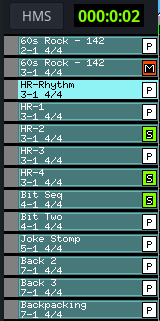
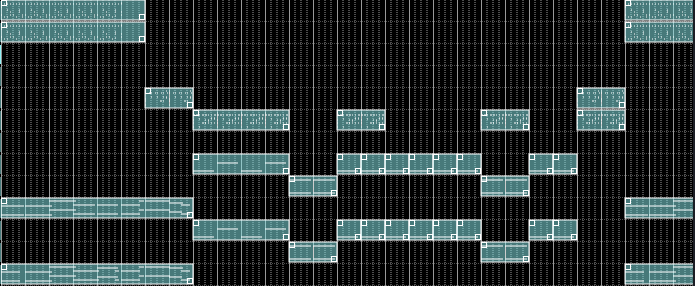

S controls whether the sequencer pauses or resets to the starting position when stopped (see tooltip).
Transport buttons Stop, Play the sequencer.
Additional keybinding for f (Fast Forward) and r (Rewind) are available.
L = R loops the range between the L and R markers when in song mode.
Down-arrow buttons set main window time signature Beats/Length.
Grid snap sets the precision of trigger snapping on the main grid.
Transpose sets global transpose of tracks with transpose enabled on the top bar of the [5] Sequence Editor Window.
You can make transpose permanent via Edit > Apply song transpose.
JACK controls whether the sequencer connects to JACK transport. You can toggle transport control on/off to temporarily disable while editing.
Transport Follow toggles whether the grid follows the play progress line. This disables progress follow globally, including in the [5] Sequence Editor Window.
Undo reverts song triggers only for the current session.
Redo re-applies triggers to the last manual edit change for the same items as Undo.
Collapse removes triggers between L and R markers and shifts triggers on the right of the R marker, left to fill the gap.
Expand inserts empty grid space between L and R (may split triggers).
Expand and Copy inserts new triggers to the right of R, copying triggers between L and R.
Tempo Track
Left click on the tempo grid to add a tempo marker. A BPM pop-up appears. Set BPM via typing, spin buttons, key-binding (F9 default), or tap.
Press Enter/Return to accept. Escape cancels. Accepted markers are grid-snapped and shown in blue, with BPM displayed to the right.
Tempo range is 1 to 600. Drag markers (up-arrow cursor) to move them, respecting grid snap.
The first start marker cannot be moved from the start location and cannot be deleted. Use the main BPM spinner to change starting BPM.
Right click above a marker to delete it (except the first marker).
During playback, reaching a tempo mark changes BPM. The main BPM spinner reflects current tempo. On stop, it returns to the original start value.
STOP markers
Set BPM to 0 to create a stop marker.
Stop markers are red and display “[stop]”.
When playback reaches a stop marker, transport stops.
In [9] Playlist Mode, if stopped by a stop marker, the playlist automatically increments to the next file.
In live mode, only the starting BPM is used. Subsequent tempo/stop marks have no effect.
'L' and 'R' Edit Loop Track
Left mouse drag: move L marker to pointer location.
Right mouse drag: move R marker to pointer location.
CTRL + left drag: shows a green location line. Release CTRL to expand insert/paste all track triggers between L and R to the line.
ALT + left drag: shows a green location line. Release ALT to overwrite/paste all track triggers between L and R to the line.
Use Collapse/Expand buttons to modify triggers based on L and R marker positions.
Track Name area

HMS toggles the display clock between HMS (Hours/Minutes/Seconds) and BBT (Beats/Bar/Ticks).
Left click: mute track.
Left click + drag to unused track: move to new location.
Left click + drag to active track: swap locations.
ALT + left drag to inactive track: copy track to landing location.
Middle click: solo track.
Right click on name area of an unused track (left of grid): popup menu:
Paste: duplicate tracks copied to clipboard to the current track.
Song will show a sub menu for editing the Song Editor.
Mute all tracks: Will mute all used tracks on the Song Editor.
Unmute all tracks: Will unmute all tracks on the Song Editor.
Toggle mute all tracks: Will toggle mute all tracks on the Song Editor.
Right click on a used track: additional popup items:
Edit: edit track settings.
Cut: remove track and copy to clipboard.
Copy: copy track to clipboard (paste to unused track).
Export Sequence will launch the file browser to allow exporting the sequence of the current track to a MIDI file.
Export Track will launch the file browser to allow exporting the entire triggers as a MIDI file for the current selected track.
Song will open show a sub menu for editing the Song Editor with one additional item.
Clear Song Data will remove all song triggers on the related track.
Midi bus: set track bus and MIDI channel.
Mouse wheel: scroll vertically.
ALT + mouse wheel: zoom vertically in/out.
Editing Grid

Right click mouse button and hold on empty area of active track and a pencil will appear. While holding the right button,
Left click mouse button and drag to paint a trigger.
The initial size of the trigger will be the full length of the related sequence.
Resize triggers by grabbing and dragging the small boxes on the top left and bottom right of the trigger.
Left click on trigger will select and highlight the trigger.